Wzory pochodnych wybranych funkcji
Do obliczenia pochodnych dowolnie skomplikowanych
funkcji wystarczy znajomość reguł różniczkowania oraz poniższych wzorów:
| Numer wzoru | Funkcja | Pochodna funkcji | Komentarz |
| 1. | 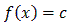 | 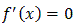 | Pochodna funkcji stałej zawsze jest równa zero, np. (12)' = 0 |
| 2. | 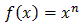 | 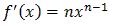 | Przykład: (x7)' = 7x6 |
| 3. | 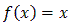 | 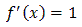 | Jest to szczególny przypadek wzoru 2. (dla n = 1) |
| 4. | 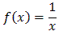 | 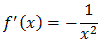 | Jest to szczególny przypadek wzoru 2. (dla n = -1). Zapisując inaczej: 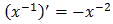 |
| 5. | 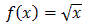 | 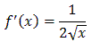 | Jest to szczególny przypadek wzoru 2. (dla n = ½). Zapisując inaczej: 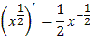 |
| 6. | 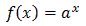 | 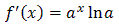 | np.: 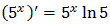 |
| 7. | 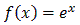 | 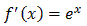 | Jest to szczególny przypadek wzoru 6. |
| 8. | 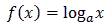 | 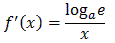 | np.: 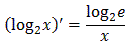 |
| 9. | 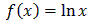 | 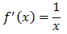 | Jest to szczególny przypadek wzoru 8. |
| 10. | 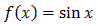 | 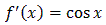 | - |
| 11. | 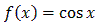 | 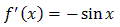 | - |
| 12. | 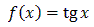 | 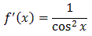 | - |
| 13. | 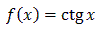 | 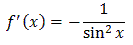 | - |
| 14. | 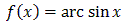 | 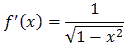 | - |
| 15. |  |
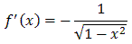 | - |